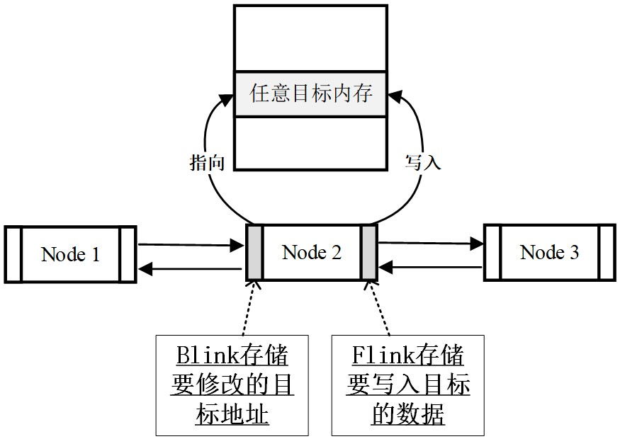

软件安全
本文最后更新于：16 天前
软件安全
基本概念
病毒和木马
病毒：病毒指编制或者在计算机程序中插入的破坏计算机功能或者破坏数据，影响计算机使用并且能够自我复制的一组计算机指令或者程序代码。具有很强的感染性，潜伏性，破坏性以及特定的触发性。
病毒必须满足自行执行和自我复制两个条件。
蠕虫病毒：蠕虫病毒是一种常见的计算机病毒，它利用网络进行复制和传播。蠕虫病毒是自包含的程序（或是一套程序），它能传播自身功能的拷贝或自身的某些部分到其他的计算机系统中（通常是经过网络连接）。
典型的蠕虫病毒有：震网病毒，比特币勒索病毒。
普通病毒与蠕虫病毒的区别：
- 复制方式：普通病毒需要传播受感染的驻留文件来进行复制，而蠕虫不使用驻留文件即可在系统之间进行自我复制。
- 传染目标：普通病毒的传染能力主要是针对计算机内的文件系统而言，而蠕虫病毒的传染目标是互联网内的所有计算机。
木马：木马是指那些表面上是有用的软件、实际目的却是危害计算机安全并导致严重破坏的计算机程序，具有非授权性，隐蔽性，是一种基于远程控制的黑客工具。
- 隐蔽性：是指木马的设计者为了防止木马被发现，会采用多种手段隐藏木马，这样服务端即使发现感染了木马，也难以确定其具体位置。
- 非授权性：是指一旦控制端与服务端连接后，控制端将窃取到服务端的很多操作权限，如修改文件、修改注册表、控制鼠标、键盘、窃取信息等等。一旦中了木马，你的系统可能就会门户大开，毫无秘密可言。
木马与病毒的区别：
- 木马不具传染性，它并不能像病毒那样复制自身，也并不“刻意”地去感染其他文件，它主要通过将自身伪装起来，吸引用户下载执行。
- 木马一般主要以窃取用户相关信息或隐蔽性控制为主要目的，相对病毒而言，可以简单地说，病毒破坏你的信息，而木马窥视你。
软件漏洞
一台计算机是由硬件以及软件两个部分组成，最基本的软件就是操作系统。
软件缺陷：计算机软件是由计算机程序员开发出来的，软件可能存在一些问题，这些问题会造成软件崩溃不能运行，我们称这些问题为软件缺陷（Bug）。
软件漏洞：软件中存在的一些问题可以在某种情况下被利用来对用户造成恶意攻击。这个时候，软件的这些问题是一个软件安全漏洞，简称“软件漏洞”。
漏洞产生的原因：软件开发质量差，轻视安全测试，省工省料，安全意识匮乏，安全维护意识不足。
漏洞可以按照生命周期分为三种：
- 0day 漏洞：0day 漏洞指还处于未公开状态的漏洞。这类漏洞只在攻击者个人或者小范围黑客团体内使用，网络用户和厂商都不知情，因此没有任何防范手段，危害非常大。
- 1day 漏洞：1day 漏洞原义是指补丁发布在 1 天内的漏洞，不过通常指发布补丁时间不长的漏洞。由于了解此漏洞并且安装补丁的人还不多，这种漏洞仍然存在一定的危害。
- 已公开漏洞：已公开漏洞是指厂商已经发布补丁或修补方法，大多数用户都已打过补丁的漏洞。这类漏洞从技术上因为已经有防范手段，并且大部分用户已经进行了修补，危害比较小。
漏洞产业链
漏洞库
大量软件漏洞需要一个统一的命名和管理规范，以便开展针对软件漏洞的研究，提升漏洞的检测水平，并为软件使用者和厂商提供有关软件漏洞的确切信息。多个机构和相关国家建立了漏洞数据库，这些数据库分为公开的和某些组织机构私有的不公开数据库。公开的数据库包括 CVE、NVD、BugTraq、CNNVD、CNVD 等。
渗透测试
渗透测试：渗透测试是通过模拟恶意黑客的攻击方法，来评估计算机网络系统安全的一种评估方法。换句话来说，渗透测试是指渗透人员在不同的位置（比如从内网、从外网等位置）利用各种手段对某个特定网络进行测试，以期发现和挖掘系统中存在的漏洞，然后输出渗透测试报告，并提交给网络所有者。网络所有者根据渗透人员提供的渗透测试报告，可以清晰知晓系统中存在的安全隐患和问题。
渗透测试的两个显著特点：
- 渗透测试是一个渐进的并且逐步深入的过程。
- 渗透测试是选择不影响业务系统正常运行的攻击方法进行的测试。
渗透测试方法：
- 黑箱测试：渗透者完全处于对系统一无所知的状态，通常这类型测试，最初的信息获取来自于 DNS、Web、Email 及各种公开对外的服务器。
- 白盒测试：白盒测试与黑箱测试恰恰相反，测试者可以通过正常渠道向被测单位取得各种资料，包括网络拓扑、员工资料甚至网站或其它程序的代码片断，也能够与单位的其它员工（销售、程序员、管理者…）进行面对面的沟通。
- 隐秘测试：隐秘测试是对被测单位而言的，通常情况下，接受渗透测试的单位网络管理部门会收到通知：在某些时段进行测试。因此能够监测网络中出现的变化。但隐秘测试则被测单位也仅有极少数人知晓测试的存在，因此能够有效地检验单位中的信息安全事件监控、响应、恢复做得是否到位。
堆栈基础
内存区域
内存区域：一个进程可能被分配到不同的内存区域去执行：
- 代码区：通常是指用来存放程序执行代码的一块内存区域。这个区域存储着被装入执行的二进制机器代码，处理器会到这个区域取指并执行。
- 静态数据区：通常是指用来存放程序运行时的全局变量、静态变量等的内存区域。通常，静态数据区包括初始化数据区（Data Segment）和未初始化数据区（BSS Segment）两部分。未初始化数据区 BSS 区存放的是未初始化的全局变量和静态变量，特点是可读写，在程序执行之前 BSS 段会自动清 0。
- 堆区：用于动态地分配进程内存。进程可以在堆区动态地请求一定大小的内存，并在用完之后归还给堆区。动态分配和回收是堆区的特点。
- 栈区：用于支持进程的执行，动态地存储函数之间的调用关系、局部变量等，以保证被调用函数在返回时恢复到母函数中继续执行。
进程内存的精确组织形式依赖于操作系统、编译器、链接器以及载入器，不同操作系统有不同的内存组织形式。下图展示了 UNIX 和 Win32 可能的进程内存组织形式，虽然次序有差异，但整体上还是按上述四类内存进行组织。

程序在执行的过程需要两种不同类型的内存来协同配合，即栈区和堆区：
栈（stack）区主要存储函数运行时的局部变量、数组等。栈变量在使用时不需要额外的申请操作，系统栈会根据函数中的变量声明自动为其预留内存空间；同样，栈变量的释放也无需程序员参与，由系统栈跟随函数调用的结束自动回收。
栈区是向低地址扩展的数据结构，是一种先入后出的特殊结构。栈顶的地址和栈的最大容量是系统预先规定好的，在 WINDOWS 下，栈的默认大小是 2M，如果申请的空间超过栈的剩余空间时，将提示溢出。
堆（heap）区是一种程序运行时动态分配的内存。所谓动态，就是说所需内存的大小在程序设计时不能预先确定或者内存过大无法在栈区分配，需要在程序运行的时候参考用户的反馈。
堆区在使用的时候需要程序员使用专有的函数进行申请，如 C 语言的 malloc 函数、C++ 语言的 new 函数等。它是向高地址扩展的数据结构，堆的大小受限于计算机的虚拟内存。
申请效率上：栈由系统自动分配，速度较快，但程序员是无法控制的。 堆是由程序员分配的内存，一般速度比较慢，而且容易产生内存碎片，不过用起来方便。
堆的内存组织如下图所示，包括堆块和堆表两部分。

- 堆块是堆的基本组织单位，包括两个部分，即块首和块身。块首是用来标识这个堆块自身的信息，例如块大小、空闲还是占用等；块身紧随其后，是最终分配给用户使用的数据区。
- 堆表一般位于整个堆区的开始位置，用于索引堆区中所有堆块的重要信息，包括堆块的位置、堆块的大小、空闲还是占用等。堆表的数据结构决定了整个堆区的组织方式，是快速检索空闲块、保证块分配效率的关键。堆表在设计的时候，可能会采用平衡二叉树等高效数据结构用于优化查找效率。现代操作系统的堆表往往不止一种数据结构。
堆块会有两种状态：占有态和空闲态。其中，空闲态的堆块会被链入空链表中，由系统管理。而占有态的堆块会返回一个由程序员定义的句柄，通常是一个堆块指针，来完成对堆块内存的读、写和释放操作，由程序员管理。
占有态堆块和空闲态堆块的示意图如下图所示。

块首存放着堆块的信息。
对于空闲态堆块而言，块首额外存储了两个 4 字节的指针：Flink 指针和 Blink 指针，用于链接系统中的其他空闲堆块。其中，Flink 前向指针存储了前一个空闲块的地址，Blink 后向指针存储了后一个空闲块的地址。
注意：
- 指向堆块的指针或者句柄，指向的是块身的首地址。也就是，我们使用函数申请得到的地址指针都会越过 8 字节 (32 位系统）的块首，直接指向数据区（块身）。
- 堆块的大小包括块首在内，如果申请 32 字节，实际会分配 40 字节，8 字节的块首 +32 字节的块身。
- 堆块的单位是 8 字节，不足 8 字节按 8 字节分配。
在 Windows 系统中，占有态的堆块被使用它的程序索引，而堆表只索引所有空闲态的堆块。其中，最重要的堆表有两种：空闲双向链表freelist（简称空表）和快速单向链表lookaside（简称快表）。快表是为了加速堆块分配而采用的堆表，从来不发生堆块合并。由于堆溢出一般不利用快表，故不作详述。
空表包含空表索引(Freelist array) 和空闲链块两个部分。空表索引也叫空表表头，是一个大小为 128 的指针数组，该数组的每一项包括两个指针，用于标识一条空表。
空表索引的第二项 (free[1]) 标识了堆中所有大小为 8 字节的空闲堆块。之后每个索引项指示的空闲堆块递增 8 字节。把空闲堆块按照大小的不同链入不同的空表，可以方便堆管理系统高效检索指定大小的空闲堆块。空表索引的第一项 free[0] 所标识的空表相对比较特殊，这条双向链表链入了所有大于等于 1024 字节小于 512KB 的堆块，升序排列。这个空表通常又称为零号空表。

堆块分配：
依据既定的查找空闲堆块的策略，找到合适的空闲堆块之后，将其状态修改为占用态、把它从堆表中“卸下”、返回一个指向堆块块身的指针给程序使用。
- 普通空表分配时首先寻找最优的空闲块分配，若失败，一个稍大些的块会被用于分配。这种次优分配发生时，会先从大块中按请求的大小精确地“割”出一块进行分配，然后给剩下的部分重新标注块首，链入空表。也就是说，空表分配存在找零钱的情况。
- 零号空表中按照大小升序链着大小不同的空闲块，故在分配时先从 free[0] 反向查找最后一个块（即最大块），看能否满足要求，如果满足要求，再正向搜索最小能满足要求的空闲堆块进行分配。
以空表为例，来讲解堆块的分配、释放和合并。
堆块释放：
堆块的释放操作包括将堆块状态由占用态改为空闲态、链入相应的堆表。所有释放的堆块都链入相应的表尾。
堆块合并：
堆块的分配和释放操作可能引发堆块合并，即当堆管理系统发现两个空闲堆块相邻时，就会进行堆块合并操作。
堆块的合并包括几个动作：将堆块从空表中卸下、合并堆块、修改合并后的块首、链接入新的链表（合并的时候还有一种操作叫内存紧缩）。
函数调用
函数调用时候将借助系统栈来完成函数状态的保存和恢复。当函数被调用时，系统栈会为这个函数开辟一个新的栈帧，并把它压入栈中。每个栈帧对应着一个未运行完的函数。栈帧中保存了该函数的返回地址和局部变量。从逻辑上讲，栈帧就是一个函数执行的环境：函数参数、函数的局部变量、函数执行完后返回到哪里等等。当函数返回时，系统栈会弹出该函数所对应的栈帧。

函数调用的步骤：
- 参数入栈：将参数从右向左依次压入系统栈中。
- 返回地址入栈：将当前代码区调用指令的下一条指令地址压入栈中，供函数返回时继续执行。
- 代码区跳转：处理器从当前代码区跳转到被调用函数的入口处。
- 栈帧调整：
保存当前栈帧状态值，以备后面恢复本栈帧时使用。
将当前栈帧切换到新栈帧。
常见寄存器和栈帧
寄存器（register）是中央处理器 CPU 的组成部分。寄存器是有限存贮容量的高速存贮部件，它们可用来暂存指令、数据和地址。我们常常看到 32 位 CPU、64 位 CPU 这样的名称，其实指的就是寄存器的大小。32 位 CPU 的寄存器大小就是 4 个字节。
CPU 本身只负责运算，不负责储存数据。数据一般都储存在内存之中，CPU 要用的时候就去内存读写数据。但是，CPU 的运算速度远高于内存的读写速度，为了避免被拖慢，CPU 都自带一级缓存和二级缓存。基本上，CPU 缓存可以看作是读写速度较快的内存。但是，CPU 缓存还是不够快，另外数据在缓存里面的地址是不固定的，CPU 每次读写都要寻址也会拖慢速度。因此，除了缓存之外，CPU 使用寄存器来储存最常用的数据。也就是说，那些最频繁读写的数据（比如循环变量），都会放在寄存器里面，CPU 优先读写寄存器，再由寄存器跟内存交换数据。
每一个函数独占自己的栈帧空间。当前正在运行的函数的栈帧总是在栈顶。Win32 系统提供两个特殊的寄存器用于标识位于系统栈顶端的栈帧：
- ESP 栈指针寄存器（extended stack pointer），其内存放着一个指针，该指针永远指向系统栈最上面一个栈帧的栈顶。
- EBP 基址指针寄存器（extended base pointer），其内存放着一个指针，该指针永远指向系统栈最上面一个栈帧的底部。
ESP 和 EBP 之间的内存空间为当前栈帧，EBP 标识了当前栈帧的底部，ESP 标识了当前栈帧的顶部。

在函数栈帧中，一般包含以下几类重要信息：
局部变量：为函数局部变量开辟的内存空间。
栈帧状态值：保存前栈帧的顶部和底部（实际上只保存前栈帧的底部，前栈帧的顶部可以通过堆栈平衡计算得到），用于在本帧被弹出后恢复出上一个栈帧。
函数返回地址：保存当前函数调用前的“断点”信息，也就是函数调用前的指令位置，以便在函数返回时能够恢复到函数被调用前的代码区中继续执行指令。
EIP：指令指针寄存器（extended instruction pointer），其内存放着一个指针，该指针永远指向下一条等待执行的指令地址。可以说如果控制了 EIP 寄存器的内容，就控制了进程——我们让 EIP 指向哪里，CPU 就会去执行哪里的指令。
在函数调用过程中，结合寄存器看一下如何实现栈帧调整：
保存当前栈帧状态值，已备后面恢复本栈帧时使用（EBP 入栈）。
将当前栈帧切换到新栈帧（将 ESP 值赋值 EBP，更新栈帧底部）
主要寄存器
数据寄存器：数据寄存器主要用来保存操作数和运算结果等信息，从而节省读取操作数所需占用总线和访问存储器的时间。
32 位 CPU 有4 个 32 位的通用寄存器 EAX、EBX、ECX 和 EDX。对低 16 位数据的存取，不会影响高 16 位的数据。这些低 16 位寄存器分别命名为：AX、BX、CX 和 DX，它和先前的 CPU 中的寄存器相一致。
**4 个 16 位寄存器又可分割成 8 个独立的 8 位寄存器 (AX：AH-AL、BX：BH-BL、CX：CH-CL、DX：DH-DL)**，每个寄存器都有自己的名称，可独立存取。
EAX 通常称为累加器(Accumulator) 可用于乘、 除、输入 / 输出等操作，它们的使用频率很高。EAX 还通常用于存储函数的返回值。
EBX 称为基地址寄存器(Base Register) 它可作为存储器指针来使用，用来访问存储器。
ECX 称为计数寄存器(Count Register) 在循环和字符串操作时，要用它来控制循环次数；在位操作中，当移多位时，要用 CL 来指明移位的位数。
EDX 称为数据寄存器(Data Register) 在进行乘、除运算时，可作为默认操作数参与运算，也可用于存放 I/O 的端口地址。
变址寄存器：变址寄存器主要用来存放操作数的地址，用于堆栈操作和变址运算中计算操作数的有效地址。
- 32 位 CPU 有2 个 32 位通用寄存器 ESI 和 EDI。其低 16 位对应先前 CPU 中的 SI 和 DI，对低 16 位数据的存取，不影响高 16 位的数据。
- ESI 通常在内存操作指令中作为“源地址指针”使用，而 EDI 通常在内存操作指令中作为“目的地址指针”使用。
指针寄存器：寄存器 EBP、ESP 称为指针寄存器 (Pointer Register)，主要用于存放堆栈内存储单元的偏移量，用它们可实现多种存储器操作数的寻址方式，为以不同的地址形式访问存储单元提供方便。
指针寄存器不可分割成 8 位寄存器。作为通用寄存器，也可存储算术逻辑运算的操作数和运算结果。
它们主要用于访问堆栈内的存储单元，并且规定：
- EBP 为基指针 (Base Pointer) 寄存器，通过它减去一定的偏移值，来访问栈中的元素；
- ESP 为堆栈指针 (Stack Pointer) 寄存器，它始终指向栈顶。
段寄存器：段寄存器是根据内存分段的管理模式而设置的。内存单元的物理地址由段寄存器的值和一个偏移量组合而成的，标准形式为“段：偏移量”，这样可用两个较少位数的值组合成一个可访问较大物理空间的内存地址。
- CS 代码段寄存器，其值为代码段的段值
- DS 数据段寄存器，其值为数据段的段值
- ES 附加段寄存器，其值为附加数据段的段值
- SS 堆栈段寄存器，其值为堆栈段的段值
- FS 附加段寄存器，其值为附加数据段的段值
- GS 附加段寄存器，其值为附加数据段的段值
指令指针寄存器：
指令寄存器（IR，Instruction Register），是临时放置从内存里面取得的程序指令的寄存器，用于存放当前从主存储器读出的正在执行的一条指令。当执行一条指令时，先把它从内存取到数据寄存器（DR，Data Register）中，然后再传送至 IR。指令划分为操作码和地址码字段，由二进制数字组成。
指令指针寄存器用英文简称为 IP（Instruction Pointer），它虽然也是一种指令寄存器，但是严格意义上和传统的指令寄存器有很大的区别。指令指针寄存器存放下次将要执行的指令在代码段的偏移量。在计算机工作的时候，CPU 会从 IP 中获得关于指令的相关内存地址，然后按照正确的方式取出指令，并将指令放置到原来的指令寄存器中。
32 位 CPU 把指令指针扩展到 32 位，并记作 EIP。
标志寄存器：
标志寄存器在 32 位操作系统中大小是 32 位的，也就是说，它可以存 32 个标志。实际上标志寄存器并没有完全被使用，重点认识三个标志寄存器：ZF （零标志）、OF（溢出标志）、CF（进位标志）。
- Z-Flag（零标志）：它可以设成 0 或者 1。
- O-Flag（溢出标志）：反映有符号数加减运算是否溢出。如果运算结果超过了有符号数的表示范围，则 OF 置 1，否则置 0。例如：EAX 的值为 7FFFFFFFF，如果你此时再给 EAX 加 1，OF 寄存器就会被设置成 1，因为此时 EAX 寄存器的最高有效位改变了。
- C-Flag（进位标志）：用于反映运算是否产生进位或借位。如果运算结果的最高位产生一个进位或借位，则 CF 置 1，否则置 0。例，假如某寄存器值为 FFFFFFFF，再加上 1 就会产生进位。
汇编语言
内存寻址方式
寻址方式就是处理器根据指令中给出的地址信息来寻找有效地址的方式，是确定本条指令的数据地址以及下一条要执行的指令地址的方法。当采用地址指定方式时，形成操作数或指令地址的方式称为寻址方式。
指令寻址：
顺序寻址方式 由于指令地址在内存中按顺序安排，当执行一段程序时，通常是一条指令接一条指令地顺序进行。也就是说，从存储器取出第 1 条指令，然后执行这条指令；接着从存储器取出第 2 条指令，再执行第二条指令；接着再取出第 3 条指令。这种程序顺序执行的过程，称为指令的顺序寻址方式。通常，需要使用指令计数器来完成顺序指令寻址。指令计数器是计算机处理器中的一个包含当前正在执行指令地址的寄存器，在 X86 架构中称为指令指针 IP（Instruction Pointer）寄存器，在 ARM 或 C51 架构中也称为程序计数器（PC）。每执行完一条指令时，指令计数器中的地址或自动加 1 或由转移指针给出下一条指令的地址。
跳跃寻址方式 当程序转移执行的顺序时，指令的寻址就采取跳跃寻址方式。所谓跳跃，是指下条指令的地址码不是由程序计数器给出，而是由本条指令给出。注意，程序跳跃后，按新的指令地址开始顺序执行。因此，程序计数器的内容也必须相应改变，以便及时跟踪新的指令地址。采用指令跳跃寻址方式，可以实现程序转移或构成循环程序，从而能缩短程序长度，或将某些程序作为公共程序引用。指令系统中的各种条件转移或无条件转移指令，就是为了实现指令的跳跃寻址而设置的。注意跳跃的结果是当前指令修改 PC 程序计数器的值，所以下一条指令仍是通过程序计数器 PC 给出。
操作数寻址：形成操作数的有效地址的方法称为操作数的寻址方式。由于大型机、小型机、微型机和单片机结构不同，从而形成了各种不同的操作数寻址方式。
为了便于解释，使用汇编语言 MOV 指令，其用法为
MOV 目的操作数，源操作数
表示将一个数据从源地址传送到目标地址。
立即寻址 指令的地址字段给出的不是操作数的地址，而是操作数本身，这种寻址方式称为立即寻址。立即寻址方式的特点是指令执行时间很短，因为它不需要访问内存取数，从而节省了访问内存的时间。例如 MOV CL, 05H 表示将 05H 这个数值存储到 CL 寄存器中。
直接寻址 直接寻址是一种基本的寻址方法，其特点是在指令中直接给出操作数的有效地址。由于操作数的地址直接给出而不需要经过某种变换，所以称这种寻址方式为直接寻址方式。如：MOV AL,[3100H] 表示将地址 [3100H] 中的数据存储到 AL 中
在通常情况下，操作数存放在数据段中。所以，默认情况下操作数的物理地址由数据段寄存器 DS 中的值和指令中给出的有效地址直接形成。上述指令中，操作数的物理地址应为 DS:3100H。但是如果在指令中使用段超越前缀指定使用的段，则可以从其他段中取出数据，如 MOV AL, ES:[3100H]。
间接寻址 间接寻址是相对直接寻址而言的，在间接寻址的情况下，指令地址字段中的形式地址不是操作数的真正地址，而是操作数地址的指示器，或者说此形式地址单元的内容才是操作数的有效地址。如：MOV [BX], 12H 这是一种寄存器间接寻址，BX 寄存器存操作数的偏移地址，操作数的物理地址应该是 DS:BX。表示将 12H 这个数据存储到 DS:BX 中。如果操作数存放在寄存器中，通过指定寄存器来获取数据，则称为寄存器寻址。如：MOV BX, 12H 表示将 12H 这个数据存储到 BX 寄存器中。
相对寻址 操作数的有效地址是一个基址寄存器（BX, BP）或变址寄存器（SI, DI）的值加上指令中给定的偏移量之和。如：MOV AX, [DI + 1234H] 操作数的物理地址应该是 DS: DI + 1234H。与间接寻址相比，可以认为相对寻址是在间接寻址基础上，增加了偏移量。
基址变址寻址 将基址寄存器的内容，加上变址寄存器的内容而形成操作数的有效地址。如：MOV EAX, [EBX+ESI]。也可以写成MOV EAX, BX 或MOV EAX, SI
相对基址变址寻址 在基址变址寻址方式融合相对寻址方式，即增加偏移量。如：MOV EAX, [EBX+ESI+1000H] 也可以写成MOV EAX, 1000H BX
主要指令
数据传送指令
- MOV: 把源操作数送给目的操作数，其语法为：MOV 目的操作数，源操作数
- XCHG: 交换两个操作数的数据
- PUSH,POP: 把操作数压入或取出堆栈
- PUSHF,POPF,PUSHA,POPA: 堆栈指令群
- LEA,LDS,LES: 取地址至寄存器
MOV 语法：MOV 目的操作数，源操作数
mov al,[3100H]; 表示将 3100H 中的数值写入 AL 寄存器
LEA 语法：LEA 目的数，源数
将有效地址传送到指定的寄存器
lea eax, dword ptr [4ecx+ebx]
源数为”dword ptr [4ecx+ebx]”，即地址为 4ecx+ebx 里的数值。
dword ptr 是告诉地址里的数值是一个 dword 型数据。上述 lea 语句则是将源数的地址 4ecx+ebx 赋值给 eax。
位运算指令集
- AND,OR,XOR,NOT,TEST: 执行 BIT 与 BIT 之间的逻辑运算
- SHR,SHL,SAR,SAL: 移位指令
- ROR,ROL,RCR,RCL: 循环移位指令
AND （逻辑与）语法：AND 目标数，源数
AND 运算对两个数进行逻辑与运算（当且仅当两操作数对应位都为“1”时结果的相应位为“1”，否则结果相应位为“0”），目标数 = 目标数 AND 原数。
AND 指令会清空 OF、CF 标记，设置 ZF 标记
算术运算指令
- ADD,ADC 加法指令
- SUB,SBB 减法指令
- MUL,IMUL 乘法指令
- DIV,IDIV 除法指令
- NEG 将 OP 的符号反相（取二进制补码）
- INC,DEC 把 OP 的值加一或减一
ADD 语法：ADD 被加数，加数
加法指令将一个数值加在一个寄存器上或者一个内存地址上
add eax,123; 相当于 eax=eax+123
加法指令对 ZF、OF、CF 都会有影响
程序流程控制指令集
- CMP 比较 OP1 与 OP2 的值
- JMP 跳往指定地址执行
- LOOP 循环指令集
- CALL,RET 子程序调用，返回指令
- INT,IRET 中断调用及返回指令。在执行 INT 时，CPU 会自动将标志寄存器的值入栈，在执行 IRET 时则会将堆栈中的标志值弹回寄存器
- REP,REPE,REPNE 重复前缀指令集
CMP 语法：CMP 目标数，源数
CMP 指令比较两个值并且标记 CF、OF、ZF：
CMP EAX, EBX ; 比较 eax 和 ebx 是否相等，如果相等就设置 ZF 为 1
CALL 语法：CALL something
CALL 指令将当前 EIP 中的指令地址压入栈中，并且调用 CALL 后的子程序
CALL 可以这样使用：
CALL 404000 ;; 最常见：CALL 地址
CALL EAX ;; CALL 寄存器 - 如果寄存器存的值为 404000，那就等同于第一种情况
RET 语法：RET
RET 指令的功能是从一个代码区域中退出到调用 CALL 的指令处
条件转移命令
JXX: 当特定条件成立则跳往指定地址执行
字符串操作指令集
- MOVSB,MOVSW,MOVSD: 字符串传送指令
- CMPSB,CMPSW,CMPSD: 字符串比较指令
- SCASB,SCASW: 字符串搜索指令
- LODSB,LODSW,STOSB,STOSW: 字符串载入或存贮指令
软件调试基础
PE 文件格式
PE（Portable Executable）是Win32 平台下可执行文件遵守的数据格式。常见的可执行文件（如。exe 文件和。dll 文件）都是典型的 PE 文件。在程序被执行时，操作系统会按照 PE 文件格式的约定去相应的地方准确地定位各种类型的资源，并分别装入内存的不同区域。
PE 文件格式把可执行文件分成若干个数据节（section），不同的资源被存放在不同的节中。一个典型的 PE 文件中包含的节如下：
rsrc 存放程序的资源，如图标、菜单等。
text 由编译器产生，存放着二进制的机器代码，也是我们反汇编和调试的对象。
idata 可执行文件所使用的动态链接库等外来函数与文件的信息，即输入表
data 初始化的数据块，如宏定义、全局变量、静态变量等。
除此以外，还可能出现的节包括。reloc、.edata、.tls、.rdata 等。
如果是正常编译出的标准 PE 文件，其节信息往往是大致相同的。但这些 section 的名字只是为了方便人的记忆与使用，使用 Microsoft Visual C++ 中的编译指示符： #pragma data\_seg() 可以把代码中的任意部分编译到 PE 的任意节中。
加壳：是可执行程序资源压缩，是保护文件的常用手段。 加壳过的程序可以直接运行，但是不能查看源代码。要经过脱壳才可以查看源代码。
加壳其实是利用特殊的算法，对 EXE、DLL 文件里的代码、资源进行压缩、加密。类似 WINZIP 的效果，只不过这个压缩之后的文件，可以独立运行。附加在原程序上的解压程序通过 Windows 加载器载入内存后，先于原始程序执行，得到控制权，执行过程中对原始程序进行解密、还原，还原完成后再把控制权交还给原始程序，执行原来的代码部分。
加上外壳后，原始程序代码在磁盘文件中一般是以加密后的形式存在的，只在执行时在内存中还原，这样就可以比较有效地防止对程序文件的非法修改和静态反编译。
加壳工具通常分为压缩壳和加密壳两类。
- 压缩壳的特点是减小软件体积大小，加密保护不是重点。
- 加密壳种类比较多，不同的壳侧重点不同，一些壳单纯保护程序，另一些壳提供额外的功能，如提供注册机制、使用次数、时间限制等。
虚拟内存
为了防止用户程序访问并篡改操作系统的关键部分，Windows 使用了 2 种处理器存取模式：用户模式和内核模式。用户程序运行在用户模式，而操作系统代码（如系统服务和设备驱动程序）则运行在内核模式。在内核模式下程序可以访问所有的内存和硬件，并使用所有的处理器指令。操作系统程序比用户程序有更高的权限，使得系统设计者可以确保用户程序不会意外的破坏系统的稳定性。
Windows 的内存可以被分为两个层面：物理内存和虚拟内存。其中，物理内存非常复杂，需要进入 Windows 内核级别 ring0 才能看到。通常，在用户模式下，用调试器看到的内存地址都是虚拟内存。
用户编制程序时使用的地址称为虚拟地址或逻辑地址，其对应的存储空间称为虚拟内存或逻辑地址空间；而计算机物理内存的访问地址则称为实地址或物理地址，其对应的存储空间称为物理存储空间或主存空间。程序进行虚地址到实地址转换的过程称为程序的再定位。
在 Windows 系统中，在运行 PE 文件时，操作系统会自动加载该文件到内存，并为其映射出 4GB 的虚拟存储空间，然后继续运行，这就形成了所谓的进程空间。用户的 PE 文件被操作系统加载进内存后，PE 对应的进程支配了自己独立的 4GB 虚拟空间。在这个空间中定位的地址称为虚拟内存地址（Virtual Address，VA）。
到了现在，系统运行在 X64 架构的硬件上，可访问的内存也突破了以前 4GB 的限制，但是独立的进程拥有独立的虚拟地址空间的内存管理机制还在沿用。
PE 文件与虚拟内存的映射
- 静态反汇编工具看到的 PE 文件中某条指令的位置是相对于磁盘文件而言的，即所谓的文件偏移，我们可能还需要知道这条指令在内存中所处的位置，即虚拟内存地址。
- 反之，在调试时看到的某条指令的地址是虚拟内存地址，我们也经常需要回到 PE 文件中找到这条指令对应的机器码。
相对虚拟地址（Relative Virtual Address， RVA） 相对虚拟地址是内存地址相对于映射基址的偏移量。
文件偏移地址（File Offset） 数据在 PE 文件中的地址叫文件偏移地址，这是文件在磁盘上存放时相对于文件开头的偏移。
虚拟内存地址（Virtual Address， VA） PE 文件中的指令被装入内存后的地址。
装载基址（Image Base） PE 装入内存时的基地址。默认情况下，EXE 文件在内存中的基地址是 0x00400000，DLL 文件是 0x10000000。这些位置可以通过修改编译选项更改。
VA = Image Base + RVA
调试分析工具与破解实验
OllyDBG
缓冲区溢出漏洞
溢出漏洞基本概念
漏洞也称为**脆弱性 (Vulnerability)**，是计算机系统的硬件、软件、协议在系统设计、具体实现、系统配置或安全策略上存在的缺陷。这些缺陷一旦被发现并被恶意利用，就会使攻击者在未授权的情况下访问或破坏系统，从而影响计算机系统的正常运行甚至造成安全损害。
缓冲区是一块连续的内存区域，用于存放程序运行时加载到内存的运行代码和数据。
缓冲区溢出是指程序运行时，向固定大小的缓冲区写入超过其容量的数据，多余的数据会越过缓冲区的边界覆盖相邻内存空间，从而造成溢出。
缓冲区溢出攻击是指发生缓冲区溢出时，溢出的数据会覆盖相邻内存空间的返回地址、函数指针、堆管理结构等合法数据，从而使程序运行失败、或者发生转向去执行其它程序代码、或者执行预先注入到内存缓冲区中的代码。
缓冲区溢出后执行的代码，会以原有程序的身份权限运行。
造成缓冲区溢出的根本原因是缺乏类型安全功能的程序设计语言（C、C++ 等）出于效率的考虑，部分函数不对数组边界条件和函数指针引用等进行边界检查。例如，C 标准库中和字符串操作有关的函数，像 strcpy，strcat，sprintf，gets 等函数中，数组和指针都没有自动边界检查。
缓冲区溢出通常包括栈溢出、堆溢出、异常处理 SEH 结构溢出、单字节溢出等。
栈溢出漏洞
栈溢出漏洞，即发生在栈区的溢出漏洞。被调用的子函数中写入数据的长度，大于栈帧的基址到 esp 之间预留的保存局部变量的空间时，就会发生栈的溢出。要写入数据的填充方向是从低地址向高地址增长，多余的数据就会越过栈帧的基址，覆盖基址以上的地址空间。
栈溢出漏洞的利用：
- 修改返回地址：栈的存取采用先进后出的策略，程序用它来保存函数调用时的有关信息，如函数参数、返回地址，函数中的非静态局部变量存放在栈中。如果返回地址被覆盖，当覆盖后的地址是一个无效地址，则程序运行失败。如果覆盖返回地址的是恶意程序的入口地址，则源程序将转向去执行恶意程序。
- 覆盖临解变量：函数的局部变量在栈中一个挨着一个排列。如果这些局部变量中有数组之类的缓冲区，并且程序中存在数组越界的缺陷，那么越界的数组元素就有可能破坏栈中相邻变量的值，甚至破坏栈帧中所保存的 EBP 值、返回地址等重要数据。
堆溢出漏洞
堆溢出是指在堆中发生的缓冲区溢出。堆溢出后，数据可以覆盖堆区的不同堆块的数据，带来安全威胁。
相比于栈溢出，堆溢出的实现难度更大，而且往往要求进程在内存中具备特定的组织结构。然而，堆溢出攻击也已经成为缓冲区溢出攻击的主要方式之一。结合堆管理结构，堆溢出漏洞可以在任意位置写入任意数据。
如果我们通过堆溢出覆写了一个空闲堆块的块首的前向指针 flink 和后向指针 blink，我们可以精心构造一个地址和一个数据，当这个空闲堆块从链表里卸下的时候，就获得一次向内存构造的任意地址写入一个任意数据的机会。这种能够向内存任意位置写入任意数据的机会称为“Arbitrary Dword Reset”（又称 Dword Shoot）。

其它溢出漏洞
SEH 结构溢出
异常处理结构体 SEH 是 Windows 异常处理机制所采用的重要数据结构：
- SHE 结构体存放在栈中，栈中的多个 SEH 通过链表指针在栈内由栈顶向栈底串成单向链表；
- 位于链表最顶端的 SEH 通过线程环境块（TEB，Thread Environment Block）0 字节偏移处的指针标识；
- 每个 SEH 包含两个 DWORD 指针：SEH 链表指针和异常处理函数句柄，共 8 个字节。
SEH 结构用作异常处理，主要包括如下三个方面：
- 当线程初始化时，会自动向栈中安装一个 SEH，作为线程默认的异常处理。如果程序源代码中使用了_try{}_except{}或者 Assert 宏等异常处理机制，编译器将最终通过向当前函数栈帧中安装一个 SEH 来实现异常处理。
- 当异常发生时，操作系统会中断程序，并首先从 TEB 的 0 字节偏移处取出距离栈顶最近的 SEH，使用异常处理函数句柄所指向的代码来处理异常。当最近的异常处理函数运行失败时，将顺着 SEH 链表依次尝试其他的异常处理函数。
- 如果程序安装的所有异常处理函数都不能处理这个异常，系统会调用默认的系统处理程序，通常显示一个对话框，你可以选择关闭或者最后将其附加到调试器上的调试按钮。如果没有调试器能被附加于其上或者调试器也处理不了，系统就调用 ExitProcess 终结程序。
SEH 攻击是指通过栈溢出或者其他漏洞，使用精心构造的数据覆盖 SEH 链表的入口地址、异常处理函数句柄或链表指针等，实现程序执行流程的控制。
因为发生异常的时候，程序会基于 SEH 链表转去执行一个预先设定的回调函数，攻击者可以利用这个结构进行漏洞利用攻击。
- 由于 SEH 存放在栈中，利用缓冲区溢出可以覆盖 SHE。
- 如果精心设计溢出数据，则有可能把 SEH 中异常处理函数的入口地址更改为恶意程序的入口地址，实现进程的控制。
单字节溢出
单字节溢出是指程序中的缓冲区仅能溢出一个字节。
缓冲区溢出一般是通过覆盖堆栈中的返回地址，使程序跳转到 shellcode 或指定程序处执行。然而在一定条件下，单字节溢出也是可以利用的，它溢出的一个字节必须与栈帧指针紧挨，就是要求必须是函数中首个变量，一般这种情况很难出现。
其他常见漏洞
格式化字符串漏洞
printf()函数的一般形式为：printf(“format”, 输出表列)， format的结构为：%标志.精度类型。
控制 format 参数之后结合 printf() 函数特性就可以进行相应攻击。
特性一：格式化函数允许可变参数
C 语言中的格式化函数（*printf 族函数，包括 printf，fprintf，sprintf，snprintf 等）允许可变参数，它根据传入的格式化字符串获知可变参数的个数和类型，并依据格式化符号进行参数的输出。
如果调用这些函数时，给出了格式化符号串，但没有提供实际对应参数时，这些函数会将格式化字符串后面的多个栈中的内容取出作为参数，并根据格式化符号将其输出。
特性二：利用 %n 格式符写入数据
更危险的是格式化符号 %n，它的作用是将格式化函数输出字符串的长度，写入函数参数指定的位置。
通过这种格式化字符串的利用方式，可以实现向任意内存写入任意数值。
特性三：自定义打印字符串宽度
整数溢出漏洞
当对整数进行加、乘等运算时，计算的结果如果大于该类型的整数所表示的范围时，就会发生整数溢出。
- 存储溢出是使用另外的数据类型来存储整型数造成的。例如，把一个大的变量放入一个小变量的存储区域，最终是只能保留小变量能够存储的位，其他的位都无法存储，以至于造成安全隐患。
- 运算溢出是对整型变量进行运算时没有考虑到其边界范围，造成运算后的数值范围超出了其存储空间。
- 整型数可分为有符号整型数和无符号整型数两种。在开发过程中，一般长度变量使用无符号整型数，然而如果程序员忽略了符号，在进行安全检查判断的时候就可能出现问题。
攻击 C++ 虚函数
虚函数的入口地址被统一保存在虚表（Vtable）中。
对象在使用虚函数时，先通过虚表指针找到虚表，然后从虚表中取出最终的函数入口地址进行调用。
C++ 虚函数和类在内存中的位置关系如图所示：（1）虚表指针保存在对象的内存空间中，紧接着虚表指针的是其他成员变量；（2）虚函数入口地址被统一存在虚表中。

对象使用虚函数时通过（1）调用虚表指针找到虚表，然后（2）从虚表中取出最终的函数入口地址进行调用。
如果虚表里存储的虚函数指针被篡改，程序调用虚函数的时候就会执行篡改后的指定地址的 shellcode，就会发动虚函数攻击。
其他类型漏洞
注入类漏洞
注入类攻击都具备一个共同的特点：来自外部的输入数据被当作代码或非预期的指令、数据被执行，从而将威胁引入到软件或者系统。
根据应用程序的工作方式，将代码注入分为两大类：
- 二进制代码注入，即将计算机可以执行执行的二进制代码注入到其他应用程序的执行代码中。由于程序中某些缺陷导致程序的控制器被劫持，使得外部代码获得执行机会，从而实现特定的攻击目的；
- 脚本注入，即通过特定的脚本解释类程序提交可被解释执行的数据。由于应用在输入的过滤上存在缺陷，导致注入的脚本数据被执行。
SQL（Structured query language，结构化查询语言）是操作数据库数据的结构化查询语言，用于读取、更新、增加或删除数据库中保存的信息。应用程序通过 SQL 语言来完成后台数据库中的数据的增加、删除、修改和查询。
SQL 注入是将 Web 页面的原 URL、表单域或数据包输入的参数，修改拼接成 SQL 语句，传递给 Web 服务器，进而传给数据库服务器以执行数据库命令。
如果 Web 应用程序的开发人员对用户所输入的数据不进行过滤或验证就直接传输给数据库，就可能导致拼接的异常 SQL 语句被执行，获取对数据库的信息以及提权，发生 SQL 注入攻击。
操作系统命令注入攻击（OS Command Injection）是指通过 Web 应用，执行非法的操作系统命令达到攻击的目的。大多数 Web 服务器都能够使用内置的 API 与服务器的操作系统进行几乎任何必需的交互，比如 PHP 中的 system、exec 和 ASP 中的 wscript 类函数。如果正确使用，这些 API 可以丰富 Web 应用的功能。但是，如果应用程序向操作系统命令程序传送用户提交的输入，而且没有对输入进行过滤和检测，就可能遭受命令注入攻击。
许多定制和非定制 web 应用程序中都存在这种命令注入缺陷。在为企业服务器或防火墙、打印机和路由器之类的设备提供管理界面的应用程序中，这类缺陷尤其普遍。
常用的 ASP/PHP/JSP 等 web 脚本解释语言支持动态执行在运行时生成的代码这种特点，可以帮助开发者根据各种数据和条件动态修改程序代码，这对于开发人员来说是有利的，但这也隐藏着巨大的风险。
这种类型的漏洞主要来自两个方面：
（1）合并了用户提交数据的代码的动态执行。攻击者通过提交精心设计输入，使得合并用户提交数据后的代码蕴含设定的非正常业务逻辑来实施特定攻击。
（2）根据用户提交的数据指定的代码文件的动态包含。多数脚本语言都支持使用包含文件（include file），这种功能允许开发者把可重复使用的代码插入到单个文件中，在需要的时候再将它们包含到相关代码文件中。如果攻击者能修改这个文件中的代码，就让受此攻击的应用执行攻击者的代码。
SOAP（Simple Object Access Protocol，简单对象访问协议），是一个简单的基于 XML 的协议，它让应用程序跨 HTTP 进行信息交换。它主要用在 Web 服务中，通过浏览器访问的 Web 应用程序常常使用 SOAP 在后端应用程序组件之间进行通信。
由于 XML 也是一种解释型语言，因此 SOAP 也易于遭受代码注入攻击。XML 元素通过元字符<>和 / 以语法形式表示。如果用户提交的数据中包含这些字符，并被直接插入到 SOAP 消息中，攻击者就能够破坏消息的结构，进而破坏应用程序的逻辑或造成其他不利影响。
权限类漏洞
绝大多数系统，都具备基于用户角色的访问控制功能，根据不同用户对其权限加以区分。但攻击者为了访问受限资源或使用额外功能，会利用系统存在的缺陷或漏洞，进行自身角色的权限提升或权限扩展。
权限越权又可以分为两种：水平越权与垂直越权。
水平越权就是相同级别（权限）的用户或者同一角色的不同用户之间，可以越权访问、修改或者删除的非法操作。
垂直越权又被分为向上越权与向下越权。
向上越权是指一个低权限用户或者根本没权限也可以做高权限用户相同的事情；向下越权是一个高级别用户可以访问一个低级别的用户信息。
漏洞利用
漏洞利用概念
漏洞利用（exploit）是指针对已有的漏洞，根据漏洞的类型和特点而采取相应的技术方案，进行尝试性或实质性的攻击。
漏洞利用的核心就是利用程序漏洞去劫持进程的控制权，实现控制流劫持，以便执行植入的 shellcode 或者达到其它的攻击目的。
要完成攻击，Exploit 需要执行 shellcode，但 Exploit 中并不仅是 shellcode。
Exploit 要达到攻击目标，要做的工作更多，比如对应的触发漏洞、将控制权转移到 shellcode 一般均不相同，而且他们通常独立于 shellcode 的代码。
能实现特定目标的 Exploit 的有效载荷，称为 Payload。
Shellcode 编写
编写 Shellcode 存在很多难点：
- 对一些特定字符需要转码。比如，对于 strcpy 等函数造成的缓冲区溢出，会认为 NULL 是字符串的终结，所以 shellcode 中不能有 NULL，如果有需要则要进行变通或编码。
- 函数 API 的定位很困难。比如，在 Windows 系统下，系统调用多数都是封装在高级 API 中来调用的，而且不同的 Service Pack 或版本的操作系统其 API 都可能有所改动，所以不可能直接调用。因此，需要采用动态的方法获取 API 地址。
Shellcode 编码
Shellcode 代码编制过程通常需要进行编码，因为：
- 字符集的差异。应用程序应用平台的不同，可能的字符集会有差异，限制 exploit 的稳定性。
- 绕过坏字符。针对某个应用，可能对某些“坏字符”变形或者截断而破坏 exploit，比如 strcpy 函数对 NULL 字符的不可接纳性，再比如很多应用在某些处理流程中可能会限制 0x0D（\r）、0x0A（\n）或者 0x20（空格）字符。
- 绕过安全防护检测。有很多安全检测工具是根据漏洞相应的 exploit 脚本特征做的检测，所以变形 exploit 在一定程度上可以“免杀”。
编码方法：
- 网页 Shellcode。对于网页 Shellcode，可以采用 base64 编码。Base64 是网络上最常见的用于传输 8Bit 字节码的编码方式之一，是一种基于 64 个可打印字符来表示二进制数据的方法。
- 二进制机器代码。对于二进制 Shellcode 机器代码的编码，通常采用类似“加壳”思想的手段，采用：
- 自定义编码（异或编码、计算编码、简单加解密等）的方法完成 shellcode 的编码；
- 通过精心构造精简干练的解码程序，放在 shellcode 开始执行的地方，完成 shellcode 的编解码；当 exploit 成功时，shellcode 顶端的解码程序首先运行，它会在内存中将真正的 shellcode 还原成原来的样子，然后执行。
Windows 安全防护技术
ASLR
地址空间分布随机化 ASLR(addressspace layout randomization) 是一项通过将系统关键地址随机化，从而使攻击者无法获得需要跳转的精确地址的技术。
对于 ASLR 技术，微软从操作系统加载时的地址变化和可执行程序编译时的编译器选项两个方面进行了实现和完善。
系统加载地址变化
- ASLR 随机化的关键系统地址包括：PE 文件 (exe 文件和 dll 文件）映像加载地址、堆栈基址、堆地址、PEB 和 TEB（Thread Environment Block，线程环境块）地址等。
- 在 Windows Vista 上，当程序启动将执行文件加载到内存时，操作系统通过内核模块提供的 ASLR 功能，在原来映像基址的基础上加上一个随机数作为新的映像基址。
- 随机数的取值范围限定为 1 至 254，并保证每个数值随机出现。
编译器选项 -DYNAMICBASE
VS 2005 及更高版本提供了选项 /DYNAMICBASE，使用了该选项之后，编译后的程序每次运行时，其内部的栈等结构的地址都会被随机化。
GS Stack protection
GS Stack Protection 技术是一项缓冲区溢出的检测防护技术。VC++ 编译器中提供了一个 /GS 编译选项，在使用 VC7.0、Visual Studio 2005 及后续版本编译时都支持该选项，如选择该选项，编译器针对函数调用和返回时添加保护和检查功能的代码，在函数被调用时，在缓冲区和函数返回地址增加一个 32 位的随机数 security_cookie，在函数返回时，调用检查函数检查 security_cookie 的值是否有变化。
security_cookie 在进程启动时会随机产生，并且它的原始存储地址因 Windows 操作系统的 ASLR 机制也是随机存放的，攻击者无法对 security_cookie 进行篡改。
当发生栈缓冲区溢出攻击时，对返回地址或其他指针进行覆盖的同时，会覆盖 security_cookie 的值，因此在函数调用结束返回时，对 security_cookie 进行检查就会发现它的值变化了，从而发现缓冲区溢出的操作。
因此，GS 技术对基于栈的缓冲区溢出攻击能起到很好的防范作用。
DEP
DEP 分为软件 DEP 和硬件 DEP。硬件 DEP 需要 CPU 的支持，需要 CPU 在页表增加一个保护位 NX(no execute)，来控制页面是否可执行。现在 CPU 一般都支持硬件 NX，所以现在的 DEP 保护机制一般都采用的硬件 DEP，对于 DEP 设置 non-executable 标志位的内存区域，CPU 会添加 NX 保护位来控制内存区域的代码执行。
此外，Visual Studio 编译器提供了一个链接标志 /NXCOMPAT，可以在生成目标应用程序的时候使程序启用 DEP 保护。
SafeSEH
SEH（Structured Exception Handler）是 Windows 异常处理机制所采用的重要数据结构链表。程序设计者可以根据自身需要，定义程序发生各种异常时相应的处理函数，保存在 SEH 中。
通过精心构造，攻击者通过缓冲区溢出覆盖 SEH 中异常处理函数句柄，将其替换为指向恶意代码 shellcode 的地址，并触发相应异常，从而使程序流程转向执行恶意代码。
SafeSEH 就是一项保护 SEH 函数不被非法利用的技术。微软在编译器中加入了 /SafeSEH 选项，采用该选项编译的程序将 PE 文件中所有合法的 SEH 异常处理函数的地址解析出来制成一张 SEH 函数表，放在 PE 文件的数据块中，用于异常处理时候进行匹配检查。
在该 PE 文件被加载时，系统读出该 SEH 函数表的地址，使用内存中的一个随机数加密，将加密后的 SEH 函数表地址、模块的基址、模块的大小、合法 SEH 函数的个数等信息，放入 ntdll.dll 的 SEHIndex 结构中。
在 PE 文件运行中，如果需要调用异常处理函数，系统会调用加解密函数解密从而获得 SEH 函数表地址，然后针对程序的每个异常处理函数检查是否在合法的 SEH 函数表中，如果没有则说明该函数非法，将终止异常处理。接着要检查异常处理句柄是否在栈上，如果在栈上也将停止异常处理。这两个检测可以防止在堆上伪造异常链和把 shellcode 放置在栈上的情况，最后还要检测异常处理函数句柄的有效性。
从 Vista 开始，由于系统 PE 文件在编译时都采用 SafeSEH 编译选项，因此以前那种通过覆盖异常处理句柄的漏洞利用技术，也就不能正常使用了。
SEHOP
结构化异常处理覆盖保护 SEHOP（Structured Exception Handler Overwrite Protection）是微软针对 SEH 攻击提出的一种安全防护方案。
SEH 攻击是指通过栈溢出或者其他漏洞，使用精心构造的数据覆盖 SEH 上面的某个函数或者多个函数，从而控制 EIP（控制程序执行流程）。
SEHOP 的核心是检测程序栈中的所有 SEH 结构链表的完整性，来判断应用程序是否受到了 SEH 攻击。
SEHOP 针对下列条件进行检测，包括：
- SEH 结构都必须在栈上，最后一个 SEH 结构也必须在栈上；
所有的 SEH 结构都必须是 4 字节对齐的； - SEH 结构中异常处理函数的句柄 handle（即处理函数地址）必须不在栈上；
- 最后一个 SEH 结构的 handle 必须是 ntdll!FinalExceptionHandler 函数 F 等。
地址定位技术
API 函数自搜索技术
返回导向编程
绕过其它安全防护
本博客所有文章除特别声明外，均采用 CC BY-SA 4.0 协议 ，转载请注明出处！